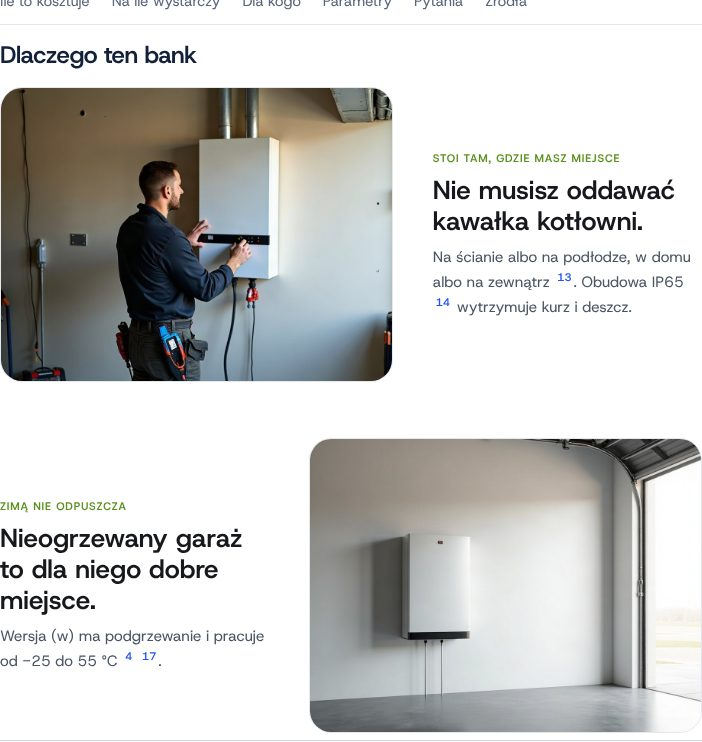
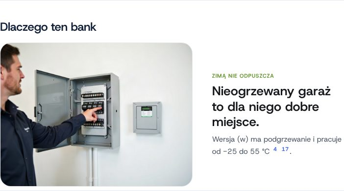
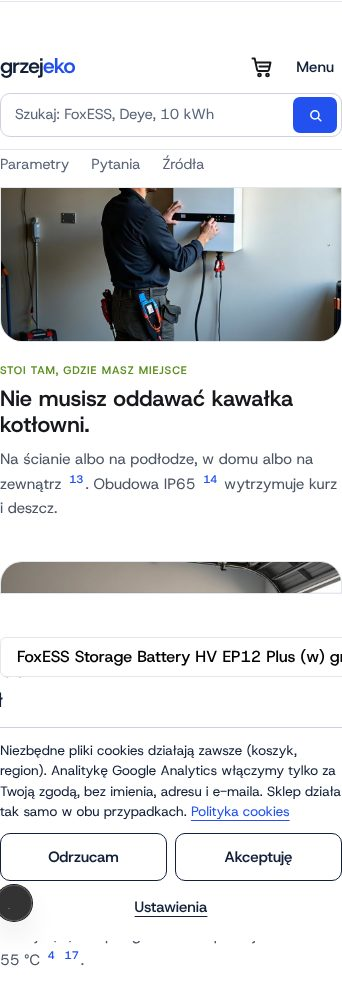

← Hub grzejekoSceny per wariant: dynamiczna karta
Zamiast sesji zdjęciowej: generator (fal.ai) wstawia packshot każdego wariantu w sceny z życia (garaż zimą, pomieszczenie techniczne, elewacja, rozbudowa, wieczór, montaż). Karta po wyborze wariantu sama podmienia galerię i zdjęcia w sekcji „Dlaczego ten bank”, bez przeładowania. Każda scena ma podpis „wizualizacja”.
Poniżej TEST mechanizmu na zastępczych zdjęciach (prawdziwe sceny generuje sesja na Macu: 18 obrazów, ok. 0,72 $). Ten sam bank, dwa warianty: EP12 ma 2 sceny w sekcji, EP5 jedną; sekcja bez sceny pokazuje sam tekst.
EP12 Plus (w)

EP5 (po kliknięciu wariantu)

Telefon, EP12

Jak to działa
- Katalog scen kategorii i packshoty wariantów:
own_shop/grzejeko/sceny/sceny.json. - Generator
generuj_sceny.py (fal-ai/flux-pro/kontext, zapasowo nano-banana/edit) zapisuje obrazy i sceny_manifest.json (klucz = SKU wariantu). - Karta: moduł ma
image: "scena:garaz_zima", sklep podstawia scenę wybranego wariantu (?v_id). - Nowy produkt = wpis z packshotem w sceny.json i jedno uruchomienie generatora.
Do decyzji
- Wierność produktu na scenach: najpierw próbka EP12 w garażu, potem całość.
- Prawo do użycia packshotów FoxESS jako wzoru (FoxESS / ecoGRAL).
- Generowanie z chmury: domena queue.fal.run w ustawieniach sieci i zmienna FAL_KEY; bez tego generuje Mac.
Generator: hub/zbuduj_strony_banki.py · kod sklepu: lib/grzejeko/sceny.tsx, sceny-serwer.ts · 30.10.2026